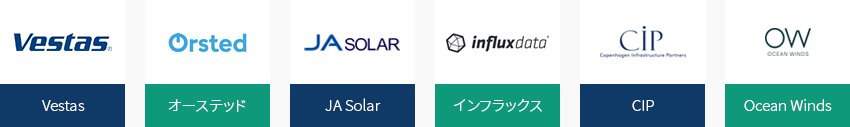
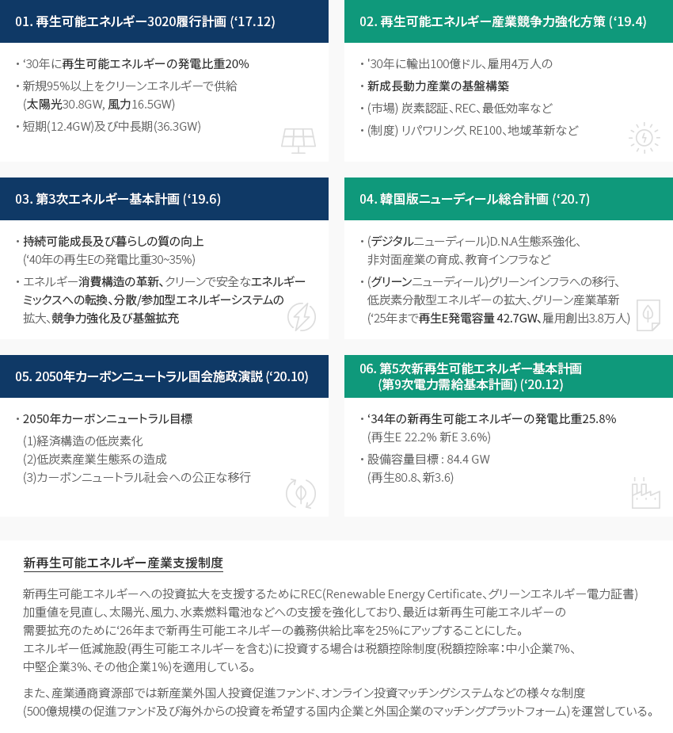
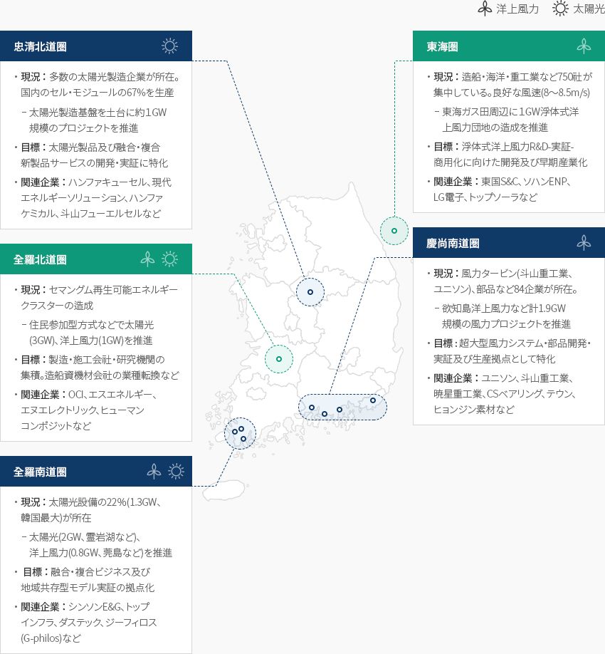

新再生可能エネルギー
- Home
- Why KOREA
- 産業
- 新再生可能エネルギー
新再生可能エネルギー
Renewable energy
-
優れた技術水準に基づく グローバル競争力の確保 내용닫기優れた技術水準に基づく グローバル競争力の確保韓国科学技術企画評価院(KISTEP、2018)によると、韓国の新再生可能エネルギー分野の技術水準は86％(最高100％)
水準で、先進国(欧州、米国、日本)とは10％前後の技術格差が存在する。太陽光産業はセル、モジュール製造メーカー(ハンファソリューション、シンソンE&G、現代エネルギーソリューション、
OCIなど)を中心に成長しており、内需市場の拡大とともに輸出及び海外工場など海外への供給比重を高めている。風力産業は成長潜在力が高い主要部品(ブレード、電力変換装置など)の生産インフラを保有しており、
大規模な風力団地の造成などを通じて内需市場及び投資を拡大し、グローバル競争力の確保に力を入れている。水素自動車、燃料電池など水素活用分野での韓国企業の製造技術力は確保されており、グリーン水素の
生産製造及び関連インフラ(輸送、貯蔵、充電販売)基盤の拡大に向けたグローバル協力事業も推進中である。「新再生可能エネルギー源別の韓国の技術競争力の現況」新再生可能エネルギー源別の韓国の技術競争力の現況 エネルギー源, 年間政府投資金額百万ドル), 技術競争力の確保(最先端国との技術格差, 最先端国との技術格差 の増減 , 先導国に比べた技術水準比率) エネルギー源 年間政府投資金額百万ドル)1) 技術競争力の確保 最先端国との技術格差2) 最先端国との技術格差 の増減 2) 先導国に比べた技術水準比率 3) 太陽光 52.4 3年以下 ‘14年比1年未満減少 80% %以上 風力 35.9 5年以上 ‘14年 比増加 60% %以上 水素 6.1 3~5年 ‘14年比1年以上減少 70% %以上 燃料電池 25.9 3年以下 ‘14年比1年以上減少 80% %以上 太陽熱 4.2 3年以下 ‘14年比1年以上減少 80% %以上 地熱 5.7 5年以上 ‘14年比1年以上減少 70% %以上 海洋 6.8 3~5年 ‘14年比1年以上減少 60% %以上 ※ 出処：新再生可能エネルギー中核技術開発事業特定評価報告書((KISTEP、2018.7)- 2013～2017年、年平均政府投資金額、事業予算要求書(2014～2018)、2018年平均為替レートを適用してウォン‐ドル換算
- 2016年技術水準評価(KISTEP、2017)
- 新再生可能エネルギー技術水準及び国外技術導入現況の調査(KISTEP)
-
新再生可能エネルギー 設備容量及び発電比重の持続的な増加 コンテンツを開く新再生可能エネルギー 設備容量及び発電比重の持続的な増加韓国エネルギー公団によると新再生可能エネルギーの開発・利用・普及促進法の改正施行(‘19.10)により、非再生廃棄物の
実績は除外された統計が作成されている。 ’20年の新再生可能エネルギーの発電比重は7.43%で、太陽光、風力などの再生可能エネルギーの発電量の増加により前年比25.9%増加した (‘19年34,196GWh→ ’20年43,062GWh)。
また、‘20年の新再生可能エネルギーの累積設備容量は25.9GWで前年比3.2%p上昇し、
太陽光は66.8%、風力は6.3%を占めている(KEA、2020)。(単位 : 千toe)新再生可能エネルギー生産量の現況 区分, 年 ※ 出処：韓国エネルギー公団新再生可能エネルギーセンター「新再生可能エネルギー普及統計」
※ 統計公表時期：調査基準年度翌年11月(確定公表)
※ 注釈：小数点第二位を四捨五入した数値でKOSISなどの資料とは差があり得る。
※ 注釈：詳細は「2018年新再生可能エネルギー普及統計」(’19年発行)資料を参照「最近5年間の新再生可能エネルギーの発電量及び発電比重」最近5年間の新再生可能エネルギーの発電量及び発電比重 区分, 年度 区分 '16 '17 '18 '19 '20 発電総量(MWh) 562,219,124 78,012,662 594,585,781 589,148,478 579,936,931 発電比重(%) 3.32 4.11 4.99 5.80 7.43 発電総量(MWh) 18,664,233 23,767,948 29,656,919 34,195,813 43,061,511 再生可能エネルギー発電量 17,160,150 21,012,926 26,189,965 30,879,376 37,161,788 新再生可能エネルギー発電量 1,504,083 2,755,022 3,466,954 3,316,436 5,899,723 再生可能エネルギー 太陽光 5,515,817 7,737,852 10,154,964 14,163,040 19,297,854 風力 1,683,142 2,169,014 2,464,879 2,679,158 3,149,798 水力 2,858,714 2,819,882 3,374,375 2,791,076 3,879,383 海洋 495,556 489,466 485,353 474,321 457,263 バイオ 6,237,564 7,466,664 9,363,229 10,415,632 9,938,354 廃棄物 369,357 330,048 347,166 356,149 439,137 新再生可能エネルギー 燃料電池 1,143,402 1,469,289 1,764,948 2,285,164 3,522,350 IGCC 360,681 1,285,733 1,702,006 1,031,272 2,377,374 -
新再生可能エネルギー 産業現況 コンテンツを開く新再生可能エネルギー 産業現況現정現政府の再生可能エネルギー転換政策の推進により新再生可能エネルギー産業が拡大し、‘20年の産業統計では
「新再生可能エネルギー産業特殊分類」を制定(21.6月)して、製造業、建設、供給、サービス業を含む全産業の現況を国の
統計として調査・発表した。‘20年基準で新再生可能エネルギー産業全体の売上は約25.5兆ウォン、従事者数は11万9千人、投資は7.7兆ウォン規模の産業に成長した。建設業は太陽光が新規普及の拡大により大きな比重を占めており、燃料電池及び風力建設業の順に成長している。
発電及び熱供給業も太陽光の小規模発電事業者の増加により企業数、従事者数でそれぞれ96%、70%の比重を占めている。製造、建設、供給外サービス業も新再生可能エネルギーの普及拡大によるエンジニアリング及び維持補修サービス業の
増加により売上1.3兆ウォン、従事者数5千人規模となっている。新再生可能エネルギー 生産量 区分, 企業数, 比重, 従事者, 売上, 投資 区分 企業数 従事者 売上 投資 社 比重(%) 人 比重(%) 億ウォン 比重(%) 億ウォン 比重(%) 製造業 499 0.6 12,759 10.8 107,369 42.2 3,180 3.9 建設業 2,169 2.6 17,617 14.9 71,886 28.2 995 1.2 発電ㆍ熱供給業 78,276 95.6 82,810 69.9 62,696 24.6 72,460 94.6 サービス業 963 1.2 5,322 4.5 12,779 5.0 210 0.3 金(ゴールド)産業 81,907 100.0 118,508 100.0 254,730 100.0 76,845 100.0 ※ 出所: 2020年新再生可能エネルギー産業統計調査結果(韓国エネルギー公団、‘21.12月) -
太陽光、風力発電事業関連 グローバル企業の相次ぐ韓国進出 コンテンツを開く太陽光、風力発電事業関連 グローバル企業の相次ぐ韓国進出最近、日本、ドイツ、スペイン、中国などは太陽光、風力発電事業に進出するために韓国法人の設立を着実に推進しており、
欧州及び北米の主要企業は韓国の発電子会社、自治体及び韓国企業を通じて洋上風力計画に参加するための法人設立を進めている。産業通商資源部(2021)によると、韓国に対する外国人直接投資(Foreign Direct Investment)は‘13年以降、持続的に増加傾向を
維持している。部品生産のための機械、半導体など中間部品生産の役割をする製造業への投資が多く、第4次産業革命と関連した
グローバルバリューチェーンへの参加に向けた投資の増加がその要因であると分析されている。最近、デンマークの風力タービン製造メーカーのヴェスタスが蔚山浮体式洋上風力発電団地造成事業と関連して業務協約を
締結しており、海外の民間投資企業としてはSK E&Sと合弁会社を設立したデンマークのファンド運用会社CIPをはじめ、、
英国及びフランスのGIG-トータルオランダ及びスウェーデンのシェル‐コエンスヘクシコン(Shell-CoensHexicon)、スペインのオーシャンウィンズ、ノルウェーのエクイノールなど持続的に増加する傾向にある。日本のインフラックス(Influx)、中国JA Solarはセマングム再生可能エネルギークラスター内に資金を出資し、工場建設に着工した。また、デンマークの
エネルギー国営企業のオーステッド(Orsted)は韓国の風力事業に進出するためにアジア太平洋地域で二番目の法人を韓国に設立した。「韓国の新再生可能エネルギー事業に進出したグローバル企業」
-
新再生可能エネルギー 育成方策 コンテンツを開く新再生可能エネルギー 育成方策韓国政府は2050年までにカーボンニュートラルを達成することを目標に掲げ、経済構造の低炭素化、低炭素産業生態系の
造成及びカーボンニュートラル社会への公正な移行の達成に向けてサブロードマップ及び実行計画を修正・変更する方針である。最近、2050炭素中立(カーボンニュートラル)委員会(‘21.10)は、2030国の温室効果ガス削減目標(NDC、Nationally
Determined Contribution)の上方修正(2030年まで2018年温室効果ガス排出量の40％削減)と2050カーボンニュートラルシナリオ案
(電気・熱の生産に使われる炭素排出の最小化のための石炭発電の中断など)を決議し、政府に提案した。現在、策定されている新再生可能エネルギー育成方策の関連政策には▲再生可能エネルギー3020履行計画(‘17.12)、
▲再生可能エネルギー産業競争力強化方策(’19.4)、▲第3次エネルギー基本計画(‘19.6)、▲韓国版ニューディール総合計画(‘20.7)、
▲2050年カーボンニュートラル国会施政演説(’20.10)、▲第5次新再生可能エネルギー基本計画(第9次電力需給基本計画)(‘20.12)、
▲2050炭素中立(カーボンニュートラル)委員会のNDC上方修正及び2050シナリオの提示(’21.10)などがある。01. 再生可能エネルギー3020履行計画(‘17.12)
- ‘30年に再生可能エネルギーの発電比重20%
- 新規95%以上をクリーンエネルギーで供給(太陽光30.8GW、風力16.5GW)
- 短期(12.4GW)及び中長期(36.3GW)
02. 再生可能エネルギー産業競争力強化方策(‘19.4)
- '30年に輸出100億ドル、雇用4万人の
- 新成長動力産業の基盤構築
- (市場) 炭素認証、REC、最低効率など
- (制度) リパワリング、RE100、地域革新など
03. 第3次エネルギー基本計画(’19.6)
- 持続可能成長及び暮らしの質の向上(’40年の再生Eの発電比重30~35%)
- エネルギー消費構造の革新、クリーンで安全なエネルギーミックスへの転換、分散/参加型エネルギーシステムの拡大、競争力強化及び基盤拡充
04. 韓国版ニューディール総合計画(’20.7)
- (デジタルニューディール)D.N.A生態系強化、非対面産業の育成、教育インフラなど
- (グリーンニューディール)グリーンインフラへの移行、低炭素分散型エネルギーの拡大、グリーン産業革新(’25年まで再生E発電容量 42.7GW、雇用創出3.8万人)
05. 2050年カーボンニュートラル国会 施政演説(‘20.10)
- 2050年カーボンニュートラル目標
- (1) 経済構造の低炭素化
- (2) 低炭素産業生態系の造成
- (3) カーボンニュートラル社会への公正な移行
06. 第5次新再生可能エネルギー基本計画(第9次電力需給基本計画)(‘20.12)
- ’34年の新再生可能エネルギーの発電比重25.8%(再生E 22.2% 新E 3.6%)
- 設備容量目標 : 84.4 GW(再生80.8、新3.6)
新再生可能エネルギー産業支援制度
新再生可能エネルギーへの投資拡大を支援するためにREC(Renewable Energy Certificate、グリーンエネルギー電力証書)加重値を見直し、太陽光、風力、水素燃料電池などへの支援を強化しており、最近は新再生可能エネルギーの需要拡充のために‘26年まで新再生可能エネルギーの義務供給比率を25%にアップすることにした。エネルギー低減施設(再生可能エネルギーを含む)に投資する場合は税額控除制度(税額控除率：中小企業7%、中堅企業3%、その他企業1%)を適用している。また、産業通商資源部では新産業外国人投資促進ファンド、オンライン投資マッチングシステムなどの様々な制度(500億規模の促進ファンド及び海外からの投資を希望する国内企業と外国企業のマッチングプラットフォーム)を運営している。
-
各地域の特性に合わせた 産業生態系の構築 コンテンツを開く各地域の特性に合わせた 産業生態系の構築再生可能エネルギー産業の基盤があるか大規模事業が予定されている地域に対してはインフラを補強し、
各地域の特性に合わせた産業生態系を構築する。地方自治体は地域にカスタマイズされた大規模なプロジェクトの発掘、推進など、
主導的な役割をし、政府は研究、基盤施設などのインフラ構築やR&D・実証・人材養成を支援する。-
忠清北道圏
- 現況：多数の太陽光製造企業が所在。国内のセル・モジュールの67%を生産
- 太陽光製造基盤を土台に約１GW規模のプロジェクトを推進
- 目標：太陽光製品及び融合・複合新製品サービスの開発・実証に特化
- 関連企業：ハンファキューセル、現代エネルギーソリューション、ハンファケミカル、斗山フューエルセルなど
- 現況：多数の太陽光製造企業が所在。国内のセル・モジュールの67%を生産
-
東海圏
- 現況： 造船・海洋・重工業など750社が集中している。良好な風速(8～8.5m/s)
- 東海ガス田周辺に１GW浮体式洋上風力団地の造成を推進
- 目標： 浮体式洋上風力R&D-実証-商用化に向けた開発及び早期産業化
- 関連企業： 東国S&C、ソハンENP、LG電子、トップソーラなど
- 現況： 造船・海洋・重工業など750社が集中している。良好な風速(8～8.5m/s)
-
全羅北道圏
- 現況： セマングム再生可能エネルギークラスターの造成
- 住民参加型方式などで太陽光(3GW)、洋上風力(1GW)を推進
- 目標： 製造・施工会社・研究機関の集積。造船資機材会社の業種転換など
- 関連企業： OCI、エスエネルギー、エヌエレクトリック、ヒューマンコンポジットなど
- 現況： セマングム再生可能エネルギークラスターの造成
-
慶尚南道圏
- 現況： 風力タービン(斗山重工業、ユニソン)、部品など84企業が所在。
- 欲知島洋上風力など計1.9GW規模の風力プロジェクトを推進
- 目標： 超大型風力システム・部品開発・実証及び生産拠点として特化
- 関連企業： ユニソン、斗山重工業、暁星重工業、CSベアリング、テウン、ヒョンジン素材など
- 現況： 風力タービン(斗山重工業、ユニソン)、部品など84企業が所在。
-
全羅南道圏
- 現況： 太陽光設備の22％(1.3GW、韓国最大)が所在
- 太陽光(2GW、霊岩湖など)、洋上風力(0.8GW、莞島など)を推進
- 目標： 融合・複合ビジネス及び地域共存型モデル実証の拠点化
- 関連企業： シンソンE&G、トップインフラ、ダステック、ジーフィロス(G-philos)など
- 現況： 太陽光設備の22％(1.3GW、韓国最大)が所在
※ 出所 : 再生可能エネルギー産業競争力強化方策(2019)
※ 資料協力：韓国エネルギー公団 -
忠清北道圏


{kind=link}
Invest KOREA
エネルギー/観光PM
リュ·アルム
基幹産業誘致チーム
T.+82-2-3460-7887
おすすめの立地情報
Industrial complex information
[Gwangju Metropolitan City Gwangsan-gu, Jeollanam-do Hampyeong County]
Bit-Green Industrial Complex
Click [Go to Detailed Information] to go to the relevant information screen of
Smart K-Factory service of Industrial Complex Corporation.
-
Complex nameBit-Green Industrial Complex
-
Initial designation date2009.09.30
-
Designated area(m2)4,070,692
-
ManagementKorea Industrial Complex Corporation
-
Nearby RailwayHampyeong Station
-
Distance from station(km)30
-
Nearby AirportGwangju Airport
-
Distance from airport(km)20
-
Industrial water Supply capacity(ton/day)17130(㎥/day)
-
Affiliation local governmentGwangju Metropolitan City Gwangsan-gu, Jeollanam-do Hampyeong County
-
Population1,454,154
Industrial complex information
[Jeollabuk-do Gunsan City] Saemangeum District National Industrial
Complex
Click [Go to Detailed Information] to go to the relevant information screen of
Smart K-Factory service of Industrial Complex Corporation.
-
Complex nameSaemangeum District National Industrial Complex
-
Initial designation date2019.08.02
-
Designated area(m2)18,495,346
-
ManagementSaemangeum Development Agency
-
Nearby RailwayGunsan Station
-
Distance from station(km)28
-
Nearby AirportGunsan Airport
-
Distance from airport(km)15
-
Industrial water Supply capacity(ton/day)123077(㎥/day)
-
Affiliation local governmentJeollabuk-do Gunsan City
-
Population267,982
Industrial complex information
[Ulsan Metropolitan City Nam-gu] Ulsan Techno General Industrial
Complex(Ulsan Free Economic Zone)
Click [Go to Detailed Information] to go to the relevant information screen of
Smart K-Factory service of Industrial Complex Corporation.
-
Complex nameUlsan Techno General Industrial Complex(Ulsan Free Economic Zone)
-
Initial designation date2013.06.20
-
Designated area(m2)1,286,977
-
ManagementUlsan Metropolitan City
-
Nearby RailwayTaehwagang Station
-
Distance from station(km)9
-
Nearby AirportUlsan Airport
-
Distance from airport(km)15
-
Industrial water Supply capacity(ton/day)2614(㎥/day)
-
Affiliation local governmentUlsan Metropolitan City Nam-gu
-
Population1,140,310
Industrial complex information
[Gyeongsangnam-do Miryang City] Chunhwa Agricultural Industrial
Complex
Click [Go to Detailed Information] to go to the relevant information screen of
Smart K-Factory service of Industrial Complex Corporation.
-
Complex nameChunhwa Agricultural Industrial Complex
-
Initial designation date2008.07.02
-
Designated area(m2)211,785
-
ManagementGyeongsangnam-do Miryang City
-
Nearby RailwaySangdong Station
-
Distance from station(km)14
-
Nearby AirportGimhae International Airport
-
Distance from airport(km)56
-
Industrial water Supply capacity(ton/day)633(㎥/day)
-
Affiliation local governmentGyeongsangnam-do Miryang City
-
Population105,099
Industrial complex information
[Incheon Metropolitan City Namdong-gu] Namdong National Industrial Complex
(Renewable Business District)
Click [Go to Detailed Information] to go to the relevant information screen of
Smart K-Factory service of Industrial Complex Corporation.
-
Complex nameNamdong National Industrial Complex (Renewable Business District)
-
Initial designation date1980.09.02
-
Designated area(m2)9,504,046
-
ManagementKorea Industrial Complex Corporation
-
Nearby RailwayBupyeong Station
-
Distance from station(km)9
-
Nearby AirportIncheon Airport
-
Distance from airport(km)32
-
Industrial water Supply capacity(ton/day)49081(㎥/day)
-
Affiliation local governmentIncheon Metropolitan City Namdong-gu
-
Population2,943,491
Industrial complex information
[Daejeon Metropolitan City Dong-gu] Haso Eco-friendly General Industrial
Complex
Click [Go to Detailed Information] to go to the relevant information screen of
Smart K-Factory service of Industrial Complex Corporation.
-
Complex nameHaso Eco-friendly General Industrial Complex
-
Initial designation date2012.05.11
-
Designated area(m2)306,703
-
ManagementDaejeon Metropolitan City
-
Nearby RailwayDaejeon Station
-
Distance from station(km)17
-
Nearby AirportCheongju International Airport
-
Distance from airport(km)71
-
Industrial water Supply capacity(ton/day)1300(㎥/day)
-
Affiliation local governmentDaejeon Metropolitan City Dong-gu
-
Population1,469,431